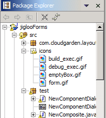
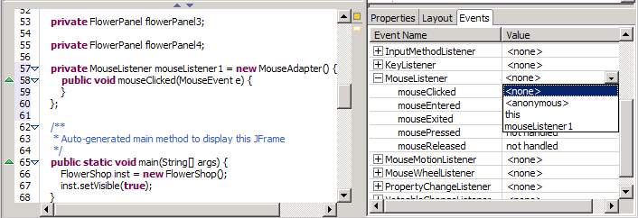
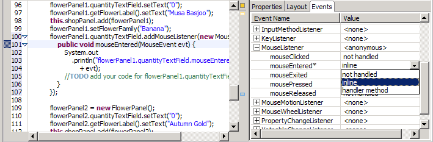

Creating Menus
To create a menu in Jigloo, right-click
either on the root component
(ie, a JFrame or a Composite) in the outline panel, or on an area
outside the GUI in the GUI editor, and choose to add a new MenuBar or
JMenuBar. The menu bar will appear under the "Extra Components" node in
the outline, and will be selected in the GUI editor. You can then
right-click on either the node, or the menu bar in the editor, and add
Menus or MenuItems and thus build up complete drop-down menus. The full
menus will not be visible in the GUI editor, but they will be
represented fully in the Outline view, and will be functional in the
Preview frame.
Note
that if you are designing a SWT Composite, the menu bar will be applied
to the Shell which eventually will contain the Composite, since
Composites themselves cannot have a menu bar.
JPopupMenus (which are not attached to a
menu bar, ie, context menus) can be added to the "Extra Components"
node in the Outline view. They can have JMenuItems and JMenus added to
them in the Outline view, but they will not be visible in the GUI
editor pane.
Images and Icons
If you wish to use images/icons in your GUI then they must be placed in
a folder at the same level as your Java source code. They do not all
need to be in the same folder, and if you package your code up into a
jar file eventually, the images can be bundled up together with the
code.
If an "image" or "icon" property appears in the GUI Property editor
for an element of a GUI, and you click on it, then a file-chooser dialog
will appear, allowing you to select an image file, and the relevant code
will be generated in your java class file.

Event Handlers
To add an event handler to a GUI
component, go to the "Events" panel in the GUI Properties editor. A drop-down list on the main node for an event listener will provide you with these options:
- "<none>" - this will delete the handler from the code.
- "<anonymous>" - this will create a handler in the code.
- "this" this will create a "add<Event>Listener(this)" method in the code.
- if you have declared an instance or
instances of an event listener inside your code (eg, a MouseListener)
then these instances will be listed in the relevant drop-down (eg, in the drop-down list for MouseListener)

If you want to just listen for "mouseEntered" events, say, then open up
the MouseListener node and choose one of the options "inline" or
"handler method" in the "mouseEntered" dropdown. The
relevant code will be added to your class and the source editor will be
scrolled to display it. Below is shown the code generated if "inline"
is selected. If "handler method" is selected then a method stub will be
generated and will be called from the anonymous listener class.

If you accidentally delete an event handler, simply hit Ctrl+Z in the source editor to undo the change.